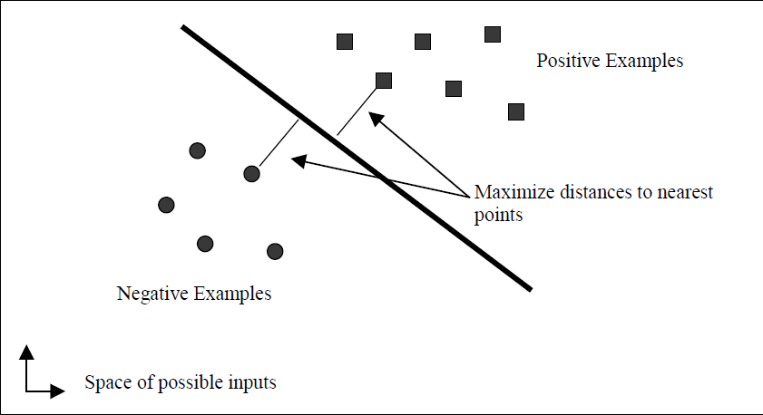
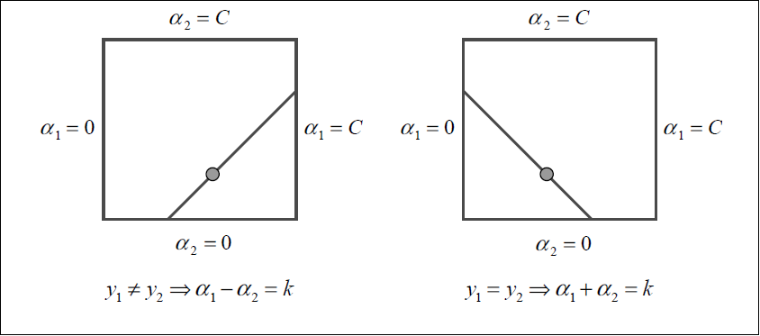

SVM基础
SVM是vapnik发明的线性分类器，处理的是标签为{-1,1}的数据，其理论支持为经验风险最小化。经验风险最小化就是VC维最小化，在SVM中的体现为最大化分类间隔，因为线性分类器的VC维与最大分类间隔的平方成反比。具体的VC维表示为下公式
\begin{equation}VC-dimension\leq min\{\frac{R^2}{M^2},n\}+1\end{equation}
其中，R为包围所有数据点的最小球半径，M为分类间隔的一半，n为样本数目大小。下图就比较形象的说明了SVM是干什么用的。

最终SVM得到的线性分类器的公式如下
\begin{equation}u=w^Tx-b\end{equation}
而参数\(w,b\)所遵循的条件为
\begin{equation}\forall i \, y_i(w^Tx_i-b)\geq 1\end{equation}
对于任何一个测试点\(x\)，如果\(u\)的值大于等于1，则这个点被标注为1。否则如果\(u\)小于等于-1，则这个点标注为-1.这个分类器的分类间隔为
\begin{equation}\frac{1}{w^Tw}\end{equation}
所以我们如果要最大化分类间隔，则需要最小化\(\frac{1}{2}w^Tw\)。所以当前问题转变为一个凸优化问题
\begin{equation}\begin{split}minimize \quad & \frac{1}{2}w^Tw\\subject\,to \quad &\forall i: y_i(w^Tx_i-b)\geq 1\end{split}\end{equation}
我们可以得到等价的对偶问题
\begin{equation}\begin{split}minimize \quad &\frac{1}{2}w^Tw-\sum{a_i(y_i(w^Tx_i-b)-1)}\\subject \, to \quad & \forall i \ a_i\geq 0\\&\forall i \ y_i(w^Tx_i-b)-1\geq 0\\& \forall i \ a_i(y_i(w^Tx_i-b)-1)=0\end{split}\end{equation}
此时得到最小值的KKT条件为
\begin{equation}\begin{split}w^T-\sum{a_iy_i{x_i}^T}&=0\\\sum{a_iy_i}&=0\\\forall i \ a_i&\geq 0\\\forall i \ y_i(w^Tx_i-b)-1&\leq 0\\\forall i \ a_i(y_i(w^Tx_i-b)-1)&=0\end{split}\end{equation}
将上面的两个等式带入到对偶问题中，从而得到了下面的简化形式,不过问题仍然是等价的。
\begin{equation}\begin{split}minimize \quad &\frac{1}{2}\sum_{i=1}^{n}{}\sum_{j=1}^{n}{y_iy_j{x_i}^Tx_ja_ia_j} -\sum_{i=1}^{n}{a_i}\\subject \ to\quad & \forall i \ a_i\geq 0\\&\sum_{i=1}^{n}y_ia_i=0\end{split}\end{equation}
在得出上述问题的最优解中\(a_i\)的取值之后，我们可以得到\(w,b\)的表达式.
\begin{equation}\begin{split}w&=\sum{a_iy_ix_i}\\b&=w^Tx_k-y_k\quad for\ a_k>0\end{split}\end{equation}
上面所陈述的是线性可分的情况，如果数据并不是线性可分的，则我们需要引入松弛变量\(\xi\)来代表偏离程度。
\begin{equation}\begin{split}minimize \quad & \frac{1}{2}w^Tw+C\sum{{\xi}_i}\\subject\,to \quad &\forall i\ y_i(w^Tx_i-b)\geq 1-{\xi}_i\\&\forall i\ {\xi}_i\geq0\end{split}\end{equation}
上面问题的对偶问题为
\begin{equation}\begin{split}minimize \quad &\frac{1}{2}w^Tw+C\sum{{\xi}_i}-\sum{a_i(y_i(w^Tx_i-b)-1+{\xi}_i)}+\sum{{\mu}_i{\xi}_i}\\subject \, to \quad & \forall i \ a_i\geq 0\\&\forall i \ y_i(w^Tx_i-b)-1+{\xi}_i\geq 0\\& \forall i \ a_i(y_i(w^Tx_i-b)-1+{\xi}_i)=0\\&\forall i\ {\xi}_i\geq0\\&\forall i\ {\mu}_i{\xi}_i=0\\&\forall i \ {\mu}_i\geq 0\end{split}\end{equation}
此时我们根据KKT的最小值条件，可以得到而外的三个等式。
\begin{equation}\begin{split}w&=\sum{a_iy_ix_i}\\0&= \sum{a_iy_i}\\a_i&=C-{\mu}_i\end{split}\end{equation}
将这些等式带入，可以得到下面的等价问题。
\begin{equation}\begin{split}minimize \quad &\frac{1}{2}\sum_{i=1}^{n}{}\sum_{j=1}^{n}{y_iy_j{x_i}^Tx_ja_ia_j} -\sum_{i=1}^{n}{a_i}\\subject \ to\quad & \forall i \ 0\leq\ a_i\leq C\\&\sum_{i=1}^{n}y_ia_i=0\end{split}\end{equation}
可以看出，引入松弛变量与未引入松弛变量所得到的问题基本差不多。令\(u=w^Tx-b\)，从得到的结果逆向推理，我们可以得到下面的式子。
\begin{equation}\begin{split}a_i=0&\rightarrow{\mu}_i=C\rightarrow {\xi}_i=0\rightarrow\ u-1+{\xi}_i\geq 0\rightarrow y_iu_i \geq 1\\0< a_i<C&\rightarrow {\mu}_i\neq 0\rightarrow {\xi}_i=0\rightarrow\ u-1+{\xi}_i= 0 \rightarrow y_iu_i=1\\a_i=C&\rightarrow {\mu}_i=0\rightarrow{\xi}_i\geq 0\rightarrow u-1+{\xi}_i= 0\rightarrow y_iu_i \leq 1\end{split}\end{equation}
上面这个性质非常重要，是理解SMO算法的关键（其实是可以左右推导的，这里没有写出来，忘了那个符号怎么写了）。
SMO优化方法
现在我们的问题就是，如何快速的求解下面这个优化问题。
\begin{equation}\begin{split}minimize \quad &\frac{1}{2}\sum_{i=1}^{n}{}\sum_{j=1}^{n}{y_iy_j{x_i}^Tx_ja_ia_j} -\sum_{i=1}^{n}{a_i}\\subject \ to\quad & \forall i \ 0\leq\ a_i\leq C\\&\sum_{i=1}^{n}y_ia_i=0\end{split}\end{equation}
解决带不等式限制的凸优化问题，采取的一般都是内点法。但是内点法的代价太大，需要存储一个\(n^2\)的矩阵，在内存有限的条件下不可行，且每次求全局导数花费时间很多，此外还牵涉到数值问题。而SMO是解决二次优化问题的神器。他每次选择两个拉格朗日乘子 \(a_i,a_j\)来求条件最小值，然后更新\(a_i,a_j\)。由于在其他拉格朗日乘子固定的情况下，\(a_i,a_j\)有如下关系
\begin{equation}\sum{a_iy_i}=0\rightarrow a_iy_i+a_jy_j=t\end{equation}
这样\(a_i\)就可以通过\(a_j\)表示出来，此时优化问题可以转变为一个变量的二次优化问题，这个问题的计算量非常少。所以SMO包括两个过程，一个过程选择两个拉格朗日乘子，这是一个外部循环，一个过程来求解这两个变量的二次优化问题，这个是循环内过程。我们先来解决两个变量的lagrange multipliers问题，然后再去解决乘子的选择问题。
Two Lagrange Multiplier
为了计算两个lagrange Multiplier的优化问题，SMO首先计算这两个乘子的取值范围，然后再这个范围限制下解决二次优化问题。为了书写方便，现在用\(1,2\)来代替\(i,j\)。这两个变量之间的关系我们之前已经给出了\(a_1y_1+a_2y_2=k\),下面这幅图生动形象的解释了这两个变量的关系。

现在我们来讨论在进行双变量二次优化时\(a_2\)的取值范围。如果\(y_1!=y_2\)，则\(a_2\)的下界\(L\)和上界\(H\)可以表示为
\begin{equation}L=max(0,a_2-a_1),\quad H=min(C,C+a_2-a_1)\end{equation}
反之，如果\(y_1=y_2\)，则\(a_2\)的下界\(L\)和上界\(H\)可以表示为
\begin{equation}L=max(0,a_2+a_1-C),\quad H=min(C,a_2+a_2)\end{equation}
而此时的优化目标为
\begin{equation}\begin{split}& minimize \quad \frac{1}{2}\sum_{i=1}^{n}{}\sum_{j=1}^{n}{y_iy_j{x_i}^Tx_ja_ia_j} -\sum_{i=1}^{n}{a_i}\\&=2{x_1}^Tx_2y_1y_2a_1a_2+a_1y_1{x_1}^TR_1+a_2y_2{x_2}^TR_1-C(a_1+a_2)-R_2\end{split}\end{equation}
这里的\(R_1,R_2\)都是与\(a_1,a_2\)无关的项。事实上，在SVM中经常使用核函数来将输入映射到高维空间，内积只是核函数的一种。在这里，我们做三个步骤：替换内积为核函数，用\(a_2\)表示\(a_1\)，同时对目标函数求\(a_2\)的二阶导数。这里我就省略一下过程，最后可以得到下面这个结果。
\begin{equation}\eta=K(x_1,x_1)+K(x_2,x_2)-2K(x_1,x_2)\end{equation}
在一般情况下，目标函数是正定的。因此在\(a_2\)的变动范围内，目标函数可以取到极小值，而且\(\eta\)会大于0.在这种情况下，SMO可以得到使得目标函数最小的\(a_2^{new}\)
\begin{equation}a_2^{new}=a_2+\frac{y_2(E_1-E_2)}{\eta}\end{equation}
其中\(E_i=u_i-y_i\)，即第\(i\)个训练样本的偏移。但是，我们还需要考虑\(a_2\)的取值范围，所以我们最后得到的\(a_2\)的新值为
\begin{equation}a_2^{\text{new,clip}}=\left \{\begin{aligned}H\quad & if \quad a_2^{\text{new}}\geq H\\a_2^{\text{new}} \quad & if\ L<a_2^{\text{new}}<H\\L\quad & if \quad a_2^{\text{new}}\leq L\end{aligned}\right.\end{equation}
同时，我们可以更新\(a_1\)，令\(s=y_1y_2\)
\begin{equation}a_1^{\text{new}}=a_1+s(a_2-a_2^{\text{new,clip}})\end{equation}
至此，双变量的二次规划问题基本解决，现在唯一一个遗留的问题就是，如果核矩阵不是正定，那么这个时候怎么办。
当然，有效的核函数所构建的核矩阵一定是正定的，这个是核函数有效的Mercer条件。对于坑爹的非正定核的情况，我们需要手工计算在直线两端的目标函数的值，通过比较来确定如何更新这两个变量。这里我就懒得去写公式了，直接照搬SMO那篇paper里面的说明。
![非正定条件更新]{{attach}image\SVM\anormal_kernal.png}
乘子选择问题
由于对于任何两个乘子，只要其中一个乘子违反了KKT条件，则我们总能通过双变量二次优化使目标函数减小。因此，收敛是一定的，现在需要考虑的是收敛的速度，及如何选取候选的两个乘子来加快收敛。
目前有两种启发式的方法，一种用来寻找第一个乘子，另外一种用来寻找第二个乘子。第一个启发方法构成了SMO的外部循环。这个启发方法首先对整个训练集合进行搜索，寻找那些违反下式KKT条件的样例。
\begin{equation}\begin{split}a_i=0&\rightarrow{\mu}_i=C\rightarrow {\xi}_i=0\rightarrow\ u-1+{\xi}_i\geq 0\rightarrow y_iu_i \geq 1\\0< a_i<C&\rightarrow {\mu}_i\neq 0\rightarrow {\xi}_i=0\rightarrow\ u-1+{\xi}_i= 0 \rightarrow y_iu_i=1\\a_i=C&\rightarrow {\mu}_i=0\rightarrow{\xi}_i\geq 0\rightarrow u-1+{\xi}_i= 0\rightarrow y_iu_i \leq 1\end{split}\end{equation}
如果一个数据样例违反了上述KKT条件，则我们将这个样例数据加入到候选集合。通过这样的判别条件，我们对所有的乘子不为0或\(C\)的数据进行扫描，得到了一个待优化的候选集合。